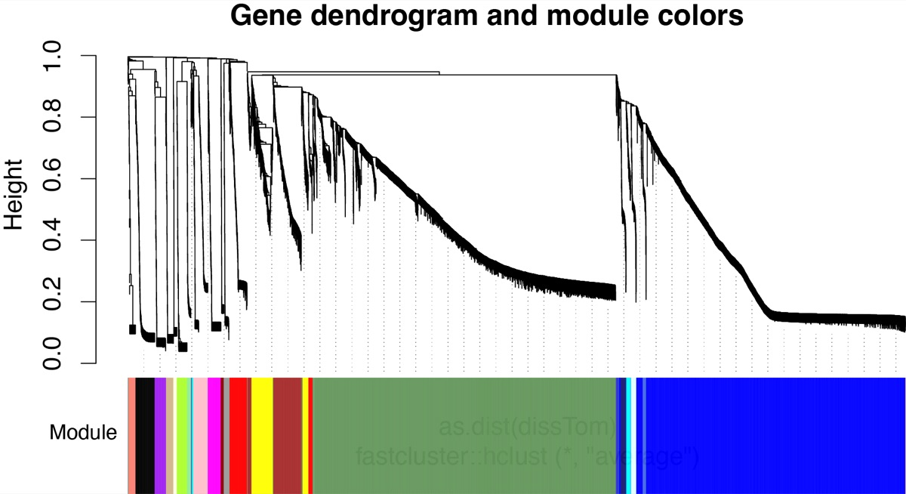
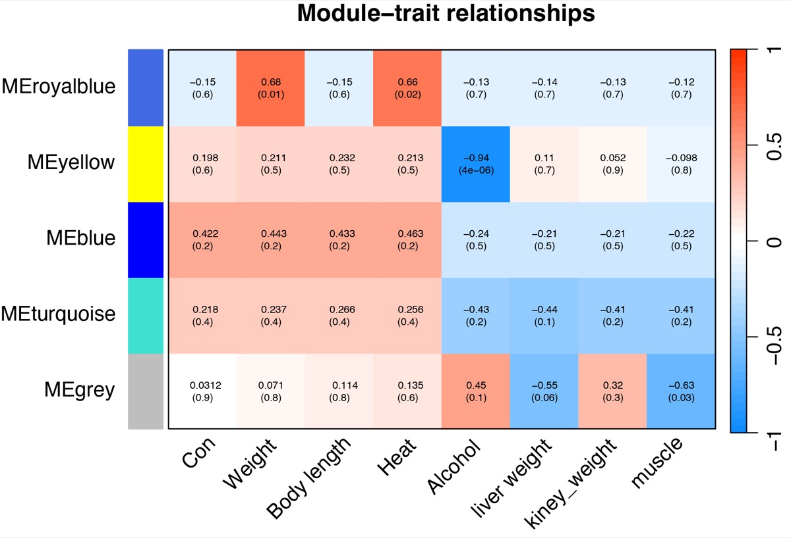
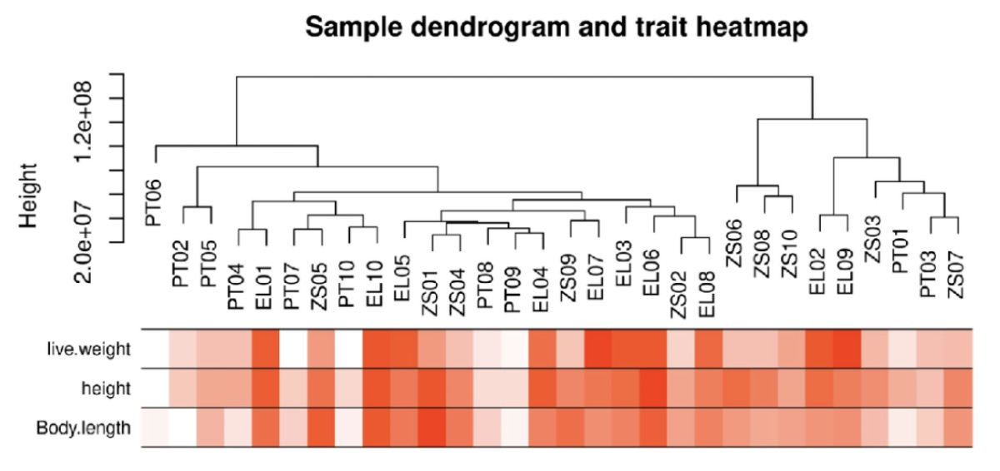

WGCNA 进阶：模块-性状热图怎么读
从聚类树到模块-性状相关性：颜色块、相关系数、p 值三者怎么一起看。
别再只盯着「颜色最红的模块」
本文是 WGCNA1 的进阶篇：从「看颜色」到「看逻辑」。软阈值怎么定才有依据、模块–表型相关如何检验显著性、模块稳定性与保留性（module preservation）2怎么评估、hub gene 要用哪些指标交叉验证——一个只在当前数据集里「好看」的模块，不值得写进论文。
第一步
- 先看聚类树和模块划分
- 判断模块分得稳不稳
第二步
- 正确解读模块-性状热图
- 避免“颜色陷阱”
第三步
- 六步筛选法锁定核心模块
- 从模块走到hub gene
从聚类树到 hub gene 筛选 · 系统提升 WGCNA 分析质量
WGCNA 的价值 · 把复杂的表达矩阵讲成有结构的生物学故事
第一步 · 基因聚类树与模块划分
先看模块有没有分出来，而不是直接看热图

图1 · 基因聚类树与模块颜色图
上方为基因层次聚类树，下方颜色带代表不同共表达模块
这张图看什么？
- 底部的颜色带代表模块划分结果
- 每个颜色 = 一个共表达模块（如 blue、turquoise）
- 树状图分支越清晰，模块区分度越好
需要警惕的信号
- 只有一两个大色块 → 模块划分太粗
- 颜色特别碎 → 参数过于敏感
- grey 模块过大 → 大量基因未被归入明确模块
模块分得不稳，后面相关性再漂亮也站不住脚
模块划分是 WGCNA 的“地基” · 地基不牢，热图再红也没有意义
模块-性状热图 · 到底在看什么？
颜色只是提示，它不能替你下最终结论

图2 · 模块-性状关系热图
每行 = 一个模块（MEblue、MEbrown…）· 每列 = 一个表型性状
每个格子里的信息
- 上方数字：相关系数 r（方向 + 强度）
- 括号内：P 值（统计显著性）
- 红色 = 正相关（模块↑ → 表型↑）
- 蓝色 = 负相关（模块↑ → 表型↓）
最常见的误区
- 只盯着最红的格子选模块
- 把热图当成“颜色深浅图”来读
- 看到颜色深就下结论，忽略 P 值
正确做法：相关系数 + P 值 + 研究背景三者结合判断
不要只看最红的格子
要看“模块-性状组合”
WGCNA 的重点不是找一个最红的格子
① 看相关性强度
- |r| ≥ 0.4 或 0.5 以上才值得关注
- P 值要显著（如 P < 0.05）
- 颜色深但 P 值不显著 → 不靠谱
② 看与研究主题的匹配度
- 代谢研究 → 关注体重、血糖、胰岛素
- 心血管研究 → 关注钙化、动脉病变
- 和主题无关的性状，颜色再深也不适合做主线
③ 看与多个表型的一致性
- 某模块同时与体重、脂肪、血糖正相关
- → 更像一个 “代谢状态模块”
- 比单独一个格子更有说服力
选模块 = 找和研究主线最贴近的模块，而不是颜色最深的模块
一个模块能同时和多个相关表型连起来，后面的逻辑会更顺
性状之间也可能相关 · 别把表型割裂开
看模块与性状的整体相关结构

图3 · 模块与性状聚类关系图
展示模块与表型之间的整体相关结构 · 性状并非孤立存在
这张图揭示什么？
- 部分性状会聚在一起（如体重+脂肪+血糖）
- 模块也会靠近某一组性状
- 说明：模块与某个性状相关，不代表只和它有关
解读策略
- 不要把性状割裂开看
- 一个模块可能代表的是一类共同变化的表型状态
- 例如：代谢相关模块 ≠ 单纯“体重模块”
- → 而是 “代谢状态相关模块”
模块-性状关系不是单点判断 · 要放进整个表型结构里理解
这张图很多人忽略，但它能帮你避免“孤立地看一个格子”的陷阱
从热图到关键模块 · 六步筛选法
六步筛选流程
- ① 看相关性：与核心性状的 r 和 P 值
- ② 看一致性：是否与多个相关表型方向一致
- ③ 看模块大小：太小不稳定，太大太混杂
- ④ GO/KEGG 富集：模块基因指向什么功能？
- ⑤ 筛选 hub gene：结合 MM 和 GS
- ⑥ 外部验证：跨数据集或实验验证
模块筛选的优先级
- 优先：与目标表型显著关联 + 基因数 ≥ 30
- 次之：与多表型一致 + 功能富集有意义
- 跳过：grey 模块（未分配基因）
- 跳过：P 值不显著的小模块
不是所有模块都要做 GO/KEGG · 聚焦核心即可
模块划分 → 模块-性状相关 → 候选模块 → 功能富集 → hub gene → 验证
关键模块不是热图上直接“点名”的，而是一步步筛选出来的
总结 · WGCNA 的进阶思考
从模块走到功能，再从功能走到 hub gene，这才是 WGCNA 能讲故事的地方
核心 Takeaways
- 热图的颜色只是提示，不是结论
- 选模块要看 r + P + 研究背景
- 关注模块与一组相关表型的一致性
- 模块颜色是标签，不是功能
- WGCNA 的价值 = 把复杂表达矩阵整理成可解释的模块
进阶思考
- 软阈值：不只看 R²≥0.9，还要看曲线形态
- 样本量：n<30 时结果不稳定，需谨慎
- 模块保守性：跨数据集验证模块是否稳定
- hub gene：MM 和 GS 双高才是核心
- 相关 ≠ 因果：WGCNA 发现关联，验证靠实验
聚类树模块划分质量
热图模块-表型关联
富集功能注释
Hub核心基因
WGCNA 的真正价值：从基因列表到网络机制的结构化思维
WGCNA · 把复杂的表达矩阵，讲成一个有结构的生物学故事
延伸阅读与参考文献
- Langfelder P, Horvath S. WGCNA: an R package for weighted correlation network analysis. BMC Bioinformatics. 2008;9:559. doi:10.1186/1471-2105-9-559
- Langfelder P, Luo R, Oldham MC, Horvath S. Is my network module preserved and reproducible? PLOS Computational Biology. 2011;7(1):e1001057. doi:10.1371/journal.pcbi.1001057
- Zhang B, Horvath S. A general framework for weighted gene co-expression network analysis. Statistical Applications in Genetics and Molecular Biology. 2005;4:Article17. doi:10.2202/1544-6115.1128